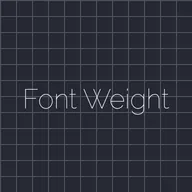

ফন্ট ওয়েট

অক্ষর কতটা মোটা হবে তা ঠিক করে, সরু থেকে ভারী পর্যন্ত, আর কীফ্রেম দিয়ে অ্যানিমেট করা যায়। এটি ভ্যারিয়েবল ফন্টের সাথে কাজ করে, যেগুলোতে সব ওয়েট একটি ফাইলেই থাকে: ফন্ট তালিকার Raleway, Quicksand, Comfortaa, Lora, Bitter, Orbitron, Playfair Display ও Dancing Script, অথবা আপনার ইমপোর্ট করা কোনো ভ্যারিয়েবল ফন্ট। নির্দিষ্ট ওয়েটের ফন্ট নিজের লুকই রাখে।
Font Weight একটি টেক্সট লেয়ারের অক্ষরগুলোকে সরু বা মোটা করে। Weight 1 থেকে 1000 পর্যন্ত যায়: 100 সরু, 400 সাধারণ, 700 বোল্ড এবং 900 ব্ল্যাক। কীফ্রেম দিয়ে এটি অ্যানিমেট করলে অক্ষরগুলো মসৃণভাবে মোটা বা সরু হয়।
এর জন্য একটি ভেরিয়েবল ফন্ট লাগে, অর্থাৎ এমন ফন্ট যার একটি ফাইলেই সব ওজন থাকে। ফন্ট তালিকায় এগুলো হলো Raleway, Quicksand, Comfortaa, Lora, Bitter, Orbitron, Playfair Display ও Dancing Script, এবং আপনার ইমপোর্ট করা ভেরিয়েবল ফন্টের সাথেও এটি কাজ করে। নির্দিষ্ট ওজনের ফন্ট নিজের চেহারাই রাখে।
সেটিংস
| সেটিং | ধরন | রেঞ্জ | ডিফল্ট |
|---|---|---|---|
| ওয়েট | সংখ্যা | 1 থেকে 1000 | 400 |